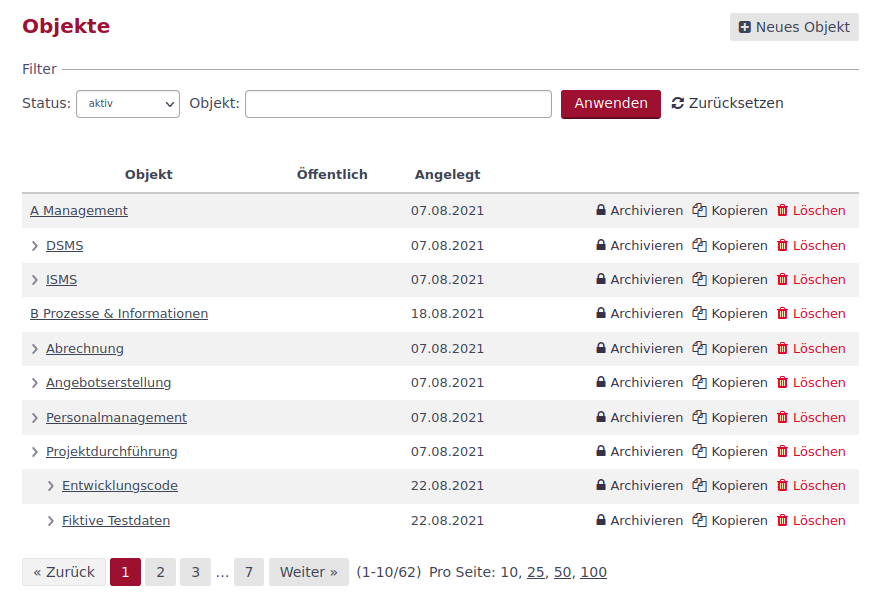
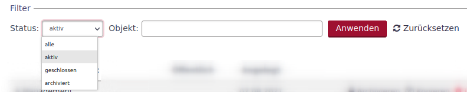
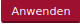
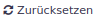
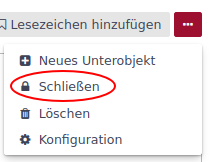
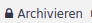
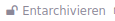

Objekte
Funktion von Objekten
Objekte sind die kleinste Systemeinheit. Ein Objekt ist ein in sich abgeschlossener Bereich, in dem verschiedene Module aktiviert werden können. Beispiele für Module sind: Aufgaben, Wiki, Dokumente, Meldungen, u.a.
Für jedes Objekt können Unterobjekte erstellt werden. So lässt sich mit Objekten eine hierarchische Struktur aufbauen.
Objekte können als
-
Arbeitsbereiche für eine Benutzergruppe aufgebaut werden,
-
Assets angelegt werden,
-
Strukturelemente unterlagerte Objekte gliedern,
-
Systemobjekte unterlagerte Objekte als Einheit (Cluster) zusammenfassen.
Über die Objektseite in der Administration lassen sich nicht mehr benötigte Objekte schließen, archivieren und löschen.
Objektliste
Die Objektliste wird beim Aufrufen der Objekte in der Administration angezeigt. Die Liste zeigt im Standard alle aktiven Objekte.

Über den Filter lässt sich der angezeigte Objektstatus ändern oder es kann nach Objekten gesucht werden.

Der Filter wird mit dem Button  aktivieren und mit dem Button  wieder auf die Grundeinstellung zurücksetzen.
Objektstatus
Objekte können folgende Status annehmen:
- aktiv
-
Das Objekt steht zur Bearbeitung bereit.
- geschlossen
-
Das Objekt steht mit seinen Informationen den Anwendern zur Verfügung, es kann aber nicht weiter bearbeitet werden.
- archiviert
-
Das Objekt steht mit allen Unterobjekten den Benutzern nicht mehr zur Verfügung. Es wurde im Vergleich zum Löschen nicht aus der Datenbank gelöscht und kann damit auch reaktiviert werden.
| Gelöscht ist kein Status eines Objekts, da mit dem Löschen eines Objekts, dass Objekt mit all seinen Unterobjekten und zugeordneten Aufgaben und Informationen nicht mehr zur Verfügung stehen. Eine Reaktivierung der Daten ist nicht möglich. |
Ein Objekt ist mit der Erstellung sofort aktiv. Es kann auf seiner Übersichtsseite über das 3-Punkte-Menü geschlossen werden.

Über den gleichen Weg lässt es sich wieder öffnen.
Das Archivieren von Objekten ist nur über die Administration möglich. Über den Button , in der Zeile des zu archivierenden Objekts, wird es in den neuen Status versetzt.
Über den dann zur Verfügung stehenden Button , lässt sich das Objekt wieder herstellen.